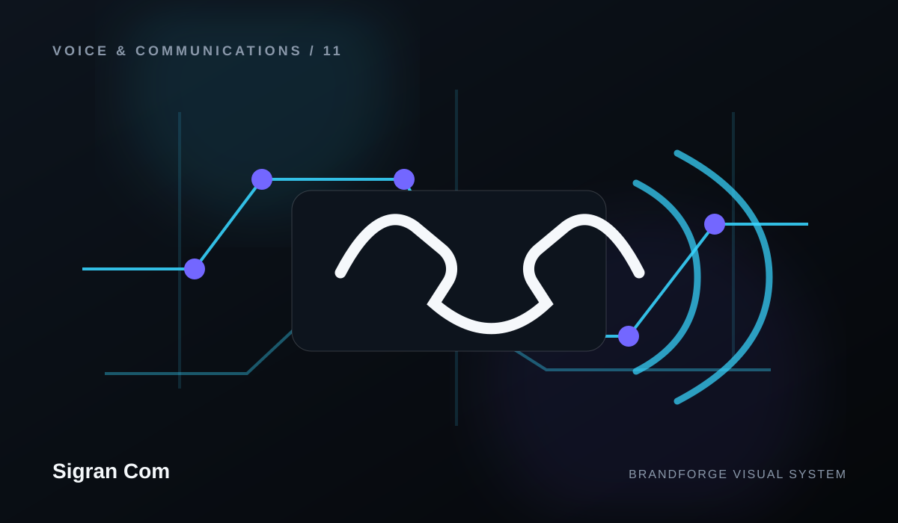

Sigran Com
Useful paths through the brand.
Explore the core resources and reference pages for Sigran Com.

Brand overview
A concise view of the Sigran Com direction, positioning, capabilities, and digital architecture.
Open resource →02Capability map
A structured view of the areas represented across the site and how they relate to the complete experience.
Open resource →03Working approach
The stages used to move from context and direction into a polished, maintainable digital system.
Open resource →04Design principles
The rules used to keep visual quality, accessibility, accuracy, and consistency aligned.
Open resource →05Frequently asked questions
Clear answers about the website, content boundaries, future expansion, and public information.
Open resource →06Support center
Verified support channels, request preparation, help routes, and escalation guidance.
Open resource →07Help center
Self-service guidance, common topics, and troubleshooting preparation.
Open resource →08Getting started
A guided path through capabilities, resources, support, and contact.
Open resource →09Contact directory
Verified business and support contact paths with no invented phone numbers or addresses.
Open resource →